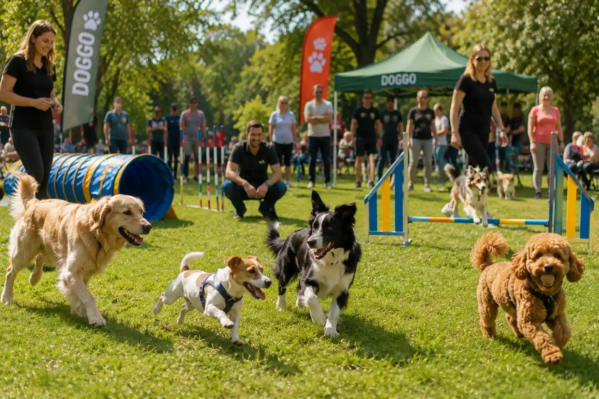
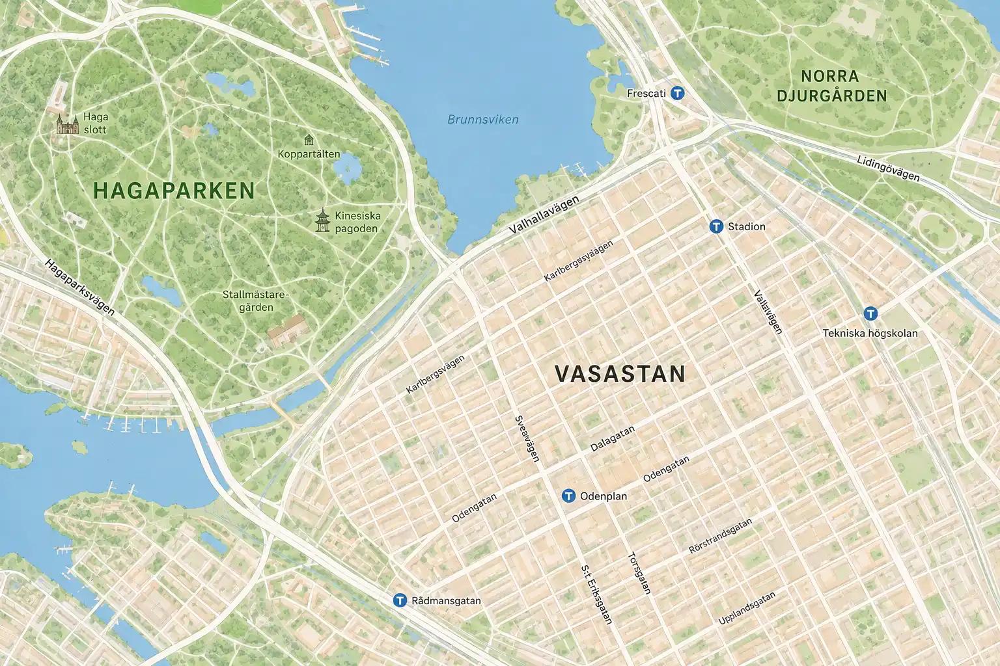

Promenadgrupp i Hagaparken
En lugn promenad för hundägare som vill träffa andra i området. Aktiviteten passar både nya och vana hundägare.
- Plats: Hagaparken
- Avstånd: 2 km bort
- Kategori: Promenad
Hitta promenadgrupper, valpträning, hundvänliga caféer och sociala aktiviteter för dig och din hund.
Här finns exempel på aktiviteter som kan passa olika hundägare, från lugna promenader till sociala event.
En lugn promenad för hundägare som vill träffa andra i området. Aktiviteten passar både nya och vana hundägare.
Träning med fokus på kontakt, inkallning och vardagslydnad i en trygg, avkopplad och positiv miljö varje vecka.

Träffa andra hundägare på ett hundvänligt café med avslappnad stämning och social gemenskap.

En social dag med lek, tips och aktiviteter för både hundar och ägare i en vacker utomhusmiljö.
Kartan visar exempel på aktiviteter i närheten. I denna version är kartan statisk, men den visar hur funktionen skulle kunna fungera i en vidareutveckling.

📍 Promenadgrupp Hagaparken · 2 km bort ☕ Hundcafé Vasastan · 3 km bort